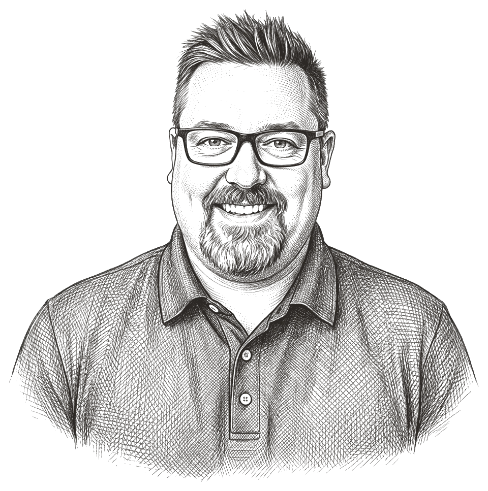

I design enterprise products and the systems & tools that scale them.
Design is such an integral part of people's everyday lives whether they know it or not. That's why I enjoy the research, strategy and collaboration it takes to build platforms that drive delightful experiences for them.

Tracking AI token usage
Using telemetry across AI tools to track the usage of token spend for the entire enterprise
Improving design processes
Creating a systemized approach to cataloguing and contributing UI components & patterns
Increasing speed of delivery
Leveraging AI and internal design systems to quickly compose and iterate designs at scale
AI has sped up my design process significantly.
I work closely with business, engineering, and the people we’re designing for from the start, to roll out the right solution while maintaining a human-centered approach.
Discover
Sit with real users. Qualitative and quantitative research to learn what people actually need, not what we assume.
Define
Synthesize, map the journey, and align on the problem worth solving with business and engineering before pixels.
Design & test
Concept, prototype, and validate with the people who’ll use it, then iterate until it genuinely holds up.
Ship & learn
Partner with engineers through delivery, measure against the KPIs we set, and keep refining once it’s live.
Collaboration is the key that unlocks success.
Since everyone can build now, AI has emphasized the need for strong collaboration but hasn't changed the importance of keeping user experiences rooted in human-centered design and behavioral sciences.
This is where I believe as designers it's still our responsibility to advocate for users to ensure that our solutions are based on their problems and needs.
Ryan is the most thoughtful and process-driven designer I’ve ever had the pleasure of working with. His skills bring immediate impact to any team he’s on. Data always drives his thought process, and his visual design is top-notch.
Ryan's innovative design skills and collaborative approach significantly enhanced our team dynamics. Employing design thinking, he created journey maps that pinpointed key areas for improvement, resulting in a revamped onboarding experience that elevated day one readiness.
Your attention to detail is unmatched, quite frankly. You should author a textbook on UX Practices Within a Fortune 1 Company. Your dedication to your craft is inspiring. I'm excited to hear about your evolution in the field and would love to see you get an opportunity to flex between a portfolio of products.
Ryan is a gifted designer. The biggest impression he made on me was his ability to lead and execute business solutions by building relationships and partnerships with key stakeholders. I highly recommend him for his high-level design and leadership skills.
I was impressed with Ryan's designs, which have not only a visually pleasing aesthetic but are also rooted in the foundation of interaction principles (e.g., Getstalt, Behavioral design, Learnability, Doherty Threshold, etc.) which is often neglected by many designers.
Ryan is a fantastic designer. I greatly appreciate his eye for quality, customer focus, willingness to go the extra mile, and a passion for delivering with excellence. If you know someone who is looking for a strong product designer, give him a shout.